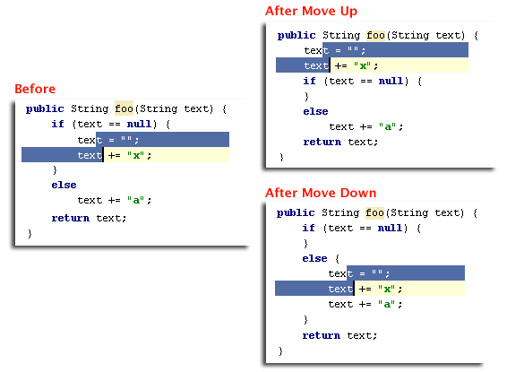

| Code | Move Statement Up/Down
action is useful for reorganizing code lines in your file, e.g., to bring variable declaration statement closer
to variable usage. For example, try to select the two lines and press &shortcut:MoveStatementUp; and &shortcut:MoveStatementDown;: When there is no selection, the current line at cursor will be moved.  |